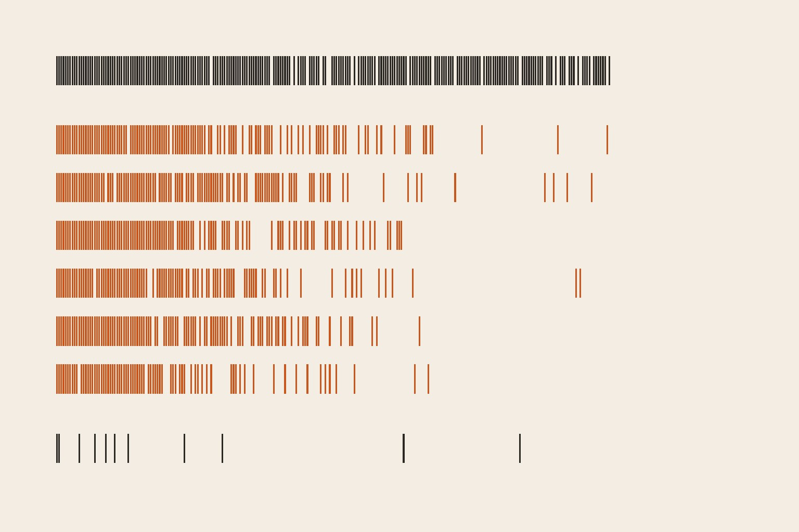
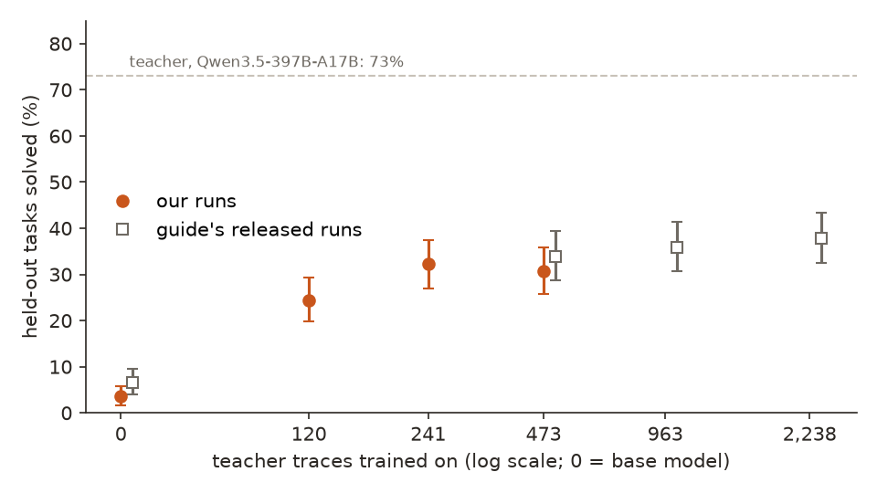
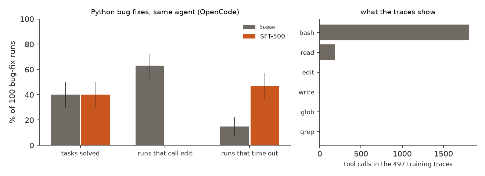
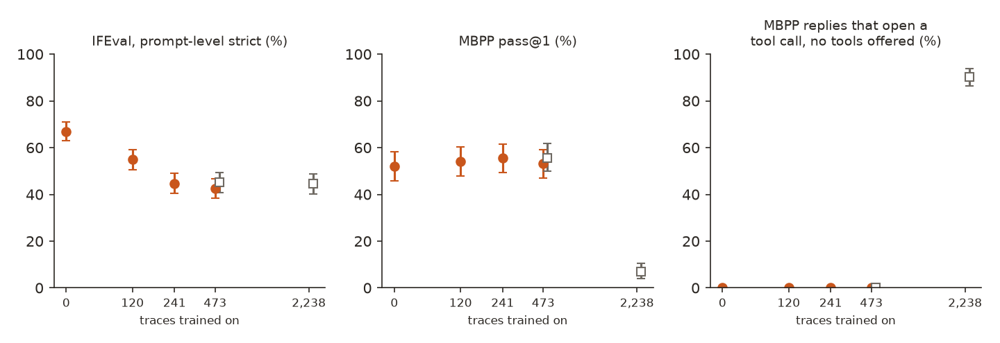
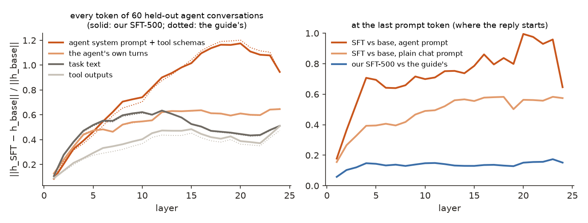
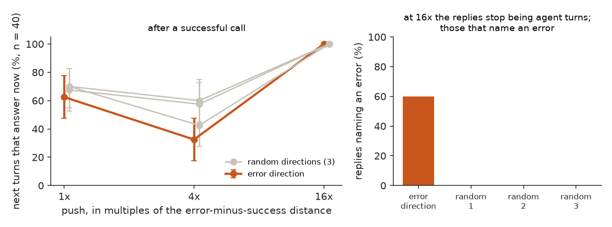

← Research·Experiments·
500 agent traces make a 2B model a working agent, cost it 24 points of instruction following, and change what it does after an error, not whether it sees one
A small model trained on a big model’s coding-agent conversations goes from solving almost no held-out tasks to solving a third. This note reruns that recipe in its own harness, measures what the gain costs outside the agent, and looks inside the model for what the traces taught.

Summary: the short answer and the key results
In short
What do 500 of a large model’s agent traces teach a 2B model?
Enough to run its own data-analysis tasks, at a price elsewhere. Supervised fine-tuning (SFT) of Qwen3.5-2B on 473 solved agent conversations by Qwen3.5-397B lifts it from 11 to 94 of 307 held-out tasks, +27.0 points [+21.8, +32.2], level with the guide’s released run; 241 traces already match 473 (+1.6 [−3.3, +6.5]) and five times more add +3.9 [−1.6, +9.4]. The gain does not reach 100 Python bug fixes in the same agent (40 against 40): the trained model stops using the edit tool, which no trace used. Outside the agent it loses 24.4 points of IFEval [19.6, 29.2], with MBPP flat. Inside, an injected tool error is equally readable before and after training (AUROC 1.000, as for a bag of words); what changed is the next move, a targeted fix 70% of the time against 47% (+23 [+12, +37]). Projecting that error direction out leaves 68%, as random directions do (67% to 70%).
Key results
| What we tested | Result | Compared with |
|---|---|---|
| Does SFT on 473 teacher traces reproduce the guide’s gain, in its own harness? (307 held-out tasks, paired) | Yes: +27.0 points [+21.8, +32.2], 11 → 94 of 307 solved; 88 tasks fixed, 5 broken | The guide’s released run: 20 → 104 (+27.4); ours against theirs −3.3 [−8.5, +1.6] |
| Is 500 traces the knee? | Earlier than 500: 241 traces match 473 (99 against 94 of 307, +1.6 [−3.3, +6.5]); 120 traces solve 75, 6.2 points short [1.3, 10.7] | The guide’s 1k and 2,238-trace models: 110 and 116 of 307; full − 500 = +3.9 [−1.6, +9.4] |
| Do the gains carry to a different kind of task? (100 Python bug fixes, same agent) | No: 40 of 100 solved for both (+0.0 [−11, +11]; 16 gained, 16 lost). SFT-500 never calls the edit tool (0 of 100 runs against 63) and times out in 47 against 15 | Base Qwen3.5-2B on the same 100 tasks |
| Does SFT cost general skills? | Instruction following, yes: −24.4 points on IFEval [−29.2, −19.6] (167 prompts broke, 35 fixed), across every instruction type; MBPP coding +1.2 [−4.3, +6.6] | Base 362 of 541 IFEval prompts, 134 of 257 MBPP problems; already −12.0 after 120 traces |
| Does more agent data make it worse? | A new reflex at 2,238 traces: 232 of 257 plain coding replies open a <tool_call> with no tools offered; MBPP falls to 18 of 257 (−45.1) | 0 of 257 for the base and every model up to 473 traces |
| Is “this tool call failed” readable inside the model? | Yes, before and after SFT: AUROC 1.000 on test contexts, error vs success and error vs a harmless warning | A bag of words also scores 1.000; shuffled labels 0.51 |
| What does SFT change after an injected error? | The reply: targeted fixes 47% → 70% (+23 [+12, +37]; 16 contexts gained, 2 lost); repeating the failing call 45% → 23%; neither model answers straight away | After a success or a harmless warning, the targeted-fix pattern appears 12% to 27% of the time |
| Does the model need that error direction to recover? | No: with it projected out of every layer, targeted fixes 68% [57, 80] | Four random directions: 67% to 70%; no ablation 70% |
| Does the direction carry “error” at all? | Yes, weakly causal: added after a success at 4× its size, answers-now falls from 70% to 32%; at 16× the replies break down and 24 of 40 talk about an error | Random directions at 4×: 42% to 60%; at 16×: 0 of 40 each |
01Introduction
The agent has run python3 -c "...df_torrents['releaseType']..." and the sandbox answers KeyError: 'releaseType'. Untrained Qwen3.5-2B sends the same command again. After training on 473 conversations of a 200-times-larger model doing this job, it asks for df_torrents.columns first. Both models’ activations mark the error just as clearly; the training changed what the model does next.
What is known. TRL’s guide (examples/sft_agent_traces, by Sergio Paniego) shows the recipe end to end: Qwen3.5-397B-A17B works as an OpenCode agent on SmolDataEnvs data-analysis tasks through OpenEnv; the tasks it solves become SFT rows; Qwen3.5-2B trained on about 500 of them goes from 5.5% to 34.4% of held-out test tasks, and five times more traces add 3 to 4 points, “so SFT gets the agent working and RL has to do the rest”. Everything is released: traces, models and every rollout.
What is missing. Whether the gain survives an independent rerun; what it costs outside the agent; whether it reaches tasks of a different kind; and what the traces changed inside the model: general tool-use habits, or the task distribution.
What does SFT on 500 of a large model’s agent traces teach Qwen3.5-2B, measured by behaviour on held-out tasks and checked inside the model against controls?
What this note does. Its contributions:
- An independent rerun of the guide in its own harness, with paired intervals on the 307 held-out tasks and a data-size curve from 120 to 2,238 traces.
- A forgetting result: the traces cost a quarter of IFEval and, at 2,238 traces, teach a tool-call reflex that breaks plain coding.
- A transfer test on 100 Python bug-fix tasks the traces never covered, in the same agent.
- An inside look with controls: a model diff against a second training run, a “tool call failed” direction against a bag of words, the recovery behaviour it should explain, and its ablation and steering against random directions.
What would count as an answer. Set before the curve, generalisation and interpretability runs:
- Held-out splits frozen with their hashes before training; any choice made on the 144 eval tasks; each final model scored on the 163 test tasks once.
- A gain is a paired interval above zero on the same tasks; “the knee” is a step whose interval contains zero.
- An interpretability claim needs a control: a second training run for the model diff, a bag of words and shuffled labels for the probe, random directions of the same size for ablation and steering.
- Interp claims are tied to behaviour: the direction counts as used only if removing or adding it changes what the model does next.
02Setup
2.1 Agent traces 101, for software engineers
- An agent trace is the full chat log of a model doing a task with tools: a long system prompt (OpenCode’s, with its tool schemas, about 8,000 tokens), the task, then turns of “call
bashwith this command” and the command’s output, until the model writes its answer toanswer.txt. Like a terminal session recording. - SFT on traces trains the small model to write the big model’s turns, token by token, given everything before them. The loss is on the agent’s own turns only (
assistant_only_loss), 4% to 8% of each trace’s tokens; the system prompt and tool outputs are context it reads but is not graded on. - Held-out tasks use Kaggle datasets that no training trace touched: the guide found that sharing a dataset with a training task inflates the score (42.4% against 17.3%), so it filters by dataset, not by question.
- A probe is a direction in the model’s activation space whose projection separates two kinds of input, here a failed tool call from a successful one. A random-direction control is the same operation along a direction drawn at random, of the same size.
2.2 Data: what each set was used for
| Set | What it is | Size | Used for |
|---|---|---|---|
| Traces (released, smoldataenvs-opencode-traces) | Solved SmolDataEnvs conversations by Qwen3.5-397B-A17B; configs 500 ⊂ 1k ⊂ full | 497 / 1,000 / 2,307 | Training (traces over 16,384 tokens dropped, as in the guide: 473 of 497) |
| Eval split (SmolDataEnvs-harbor-eval) | Held-out tasks on Kaggle datasets no trace used | 144 | Every choice (validation); interp layer choice and probe fitting |
| Test split (SmolDataEnvs-harbor-test) | The guide’s 163 test tasks whose dataset backs no training task | 163 | Scored once per final model; interp behaviour and probe test |
| Bug fixes (data/bugfix/) | MBPP solutions with one mechanical bug (a flipped comparison, + for −, an off-by-one constant); hidden asserts grade the edited file | 100 | Transfer to a different task family in the same agent |
| MBPP sanitized test | Write a Python function from a description, no tools | 257 | Forgetting check, coding |
| IFEval | Prompts with checkable format rules (no commas, all lowercase, 3 sections) | 541 | Forgetting check, instruction following |
| Error contexts (data/contexts/) | Held-out teacher conversations cut after a successful python call; the output kept, swapped for a traceback, or prefixed by a pandas warning | 60 eval + 60 test | Probe, recovery behaviour, ablation, steering |
2.3 Models and harness
The student is Qwen3.5-2B in no-think mode, fully fine-tuned with the guide’s sft.py unchanged: learning rate 1e-5, cosine schedule, 3 epochs, effective batch 8, at most 16,384 tokens, TRL pinned to commit 6a7764a. The teacher is Qwen3.5-397B-A17B, an open-weight model; no other model’s output was trained on. Evaluation is the guide’s rollouts.py: vLLM 0.25.1 serves the student, OpenCode runs each task in its own Hugging Face Sandbox through OpenEnv, and the task’s grader scores answer.txt 1 or 0, with a 10-minute limit per task. We ran it inside Modal containers (training on one H100, evaluation on one L4 to A100), with two marked additions to the guide’s scripts: a training seed and nested random subsets, and a port offset so several evaluations can share one GPU.
03How the study was run
- Re-score the guide’s released rollouts (base, SFT-500, 1k, full, teacher) on the frozen 307 tasks with paired intervals: they match its README task for task ($0).
- Phase 1, reproduce: our SFT-500 (473 traces, 17 minutes on an H100) and the base model, each on 144 eval + 163 test tasks in the guide’s harness: 614 rollouts.
- Curve: 120 and 241 traces (nested random subsets of the 500 config, seed 0), each on the 307 tasks: 614 rollouts (79 of them run later on a second compute account after the first was closed mid-run). The 963- and 2,238-trace points are the guide’s released models and rollouts, labelled as such; the 473-trace point has two independent runs (ours and the guide’s).
- Transfer: base and SFT-500 on the 100 bug-fix tasks: 200 rollouts.
- Forgetting: MBPP (257) and IFEval (541) for the base, 120, 241, 473 (both runs) and 2,238 traces: 4,788 greedy replies.
- Model diff: base, our SFT-500 and the guide’s SFT-500 on the same 240 prompts (60 whole held-out conversations, 60 first prompts, 60 bug-fix first prompts, 60 plain chat prompts).
- Probe and recovery: 120 error contexts × 3 versions × 2 models; next turns generated on the 60 test contexts (360 replies).
- Ablation and steering: the error direction and random directions, projected out after an error (5 × 60 replies) or added after a success at 3 sizes (4 × 3 × 40 replies).
| Fixed before any trial | Changed after reading results |
|---|---|
The guide’s training settings; the splits and their roles (hashes in data/splits/splits.json); paired bootstrap; the 120/241 subsets; the probe as a difference of means fitted on eval contexts; random-direction controls for ablation and steering | A “targeted fix” measure (a next call that changes the command and acts on the error’s cause) added after reading replies: exact-repeat counting missed near-identical retries. The probe layer: every layer from 5 on scored AUROC 1.000 on eval, so the held-out separation (d′) broke the tie (layer 7 of 24). A 10-minute agent limit added to the bug-fix tasks after the first smoke run ran 16 minutes. One eval per model, not two seeds per point: budget |
Conditions: agent evaluation as in the guide (vLLM default sampling as OpenCode requests it); interpretability and forgetting checks greedy with repetition_penalty=1.0; Qwen3.5 chat template in no-think mode throughout. Spend: about $33 in all (Modal about $31: about $29 on the first account, partly estimated at list prices after its billing report went offline, and $1.95 on the second, Hugging Face Sandboxes $1.97), failed runs included.
04Results
4.1 The gain reproduces: +27 points from 473 traces
Our SFT-500 solves 94 of the 307 held-out tasks against 11 for the base model, a paired gain of 27.0 points [21.8, 32.2]; it fixes 88 tasks and breaks 5. The guide’s released run solves 104 against 20 (+27.4). The two SFT-500 runs, same traces and settings on different hardware, differ by 3.3 points [−8.5, +1.6], inside noise. Our base model scores a little lower than the guide’s (11 against 20, −2.9 [−5.9, 0.0]), mostly on the eval split (2 against 11): same weights and harness, so this is the run-to-run spread of a model that solves one task in fifteen.
| Model | Eval (144) | Test (163) | Both (307) | Answer written | Agent time-outs |
|---|---|---|---|---|---|
| Qwen3.5-2B, ours | 2 | 9 | 11 (3.6% [1.6, 5.9]) | 22% | 16% |
| Qwen3.5-2B, guide’s rollouts | 11 | 9 | 20 (6.5% [3.9, 9.4]) | 35% | 11% |
| SFT-500, ours | 41 | 53 | 94 (30.6% [25.7, 35.8]) | 75% | 20% |
| SFT-500, guide’s | 48 | 56 | 104 (33.9% [28.7, 39.4]) | 60% | 29% |
| Qwen3.5-397B-A17B (teacher), guide’s | 103 | 121 | 224 (73.0% [68.1, 77.9]) | 99% | 0% |
Answer written: share of rollouts in which the agent wrote answer.txt; time-outs: the 10-minute agent limit. For our two runs these two columns cover the 125 tasks whose result files reached the Hub (section 4.9).
4.2 The knee comes before 500: 241 traces match 473, and the steps up to 2,238 are within noise
The 241-trace model solves 99 of the 307 tasks (32.2% [27.0, 37.5]) against 94 for the 473-trace model, a paired difference of +1.6 points [−3.3, +6.5]. The 120-trace model solves 75 (24.4% [19.9, 29.3]): 20.8 points above the base [16.3, 25.7] and 6.2 below the 473-trace model [1.3, 10.7]. Past 473, the guide’s released models add little: 963 traces +2.0 [−2.9, +6.8] and 2,238 traces +3.9 [−1.6, +9.4] over its 473-trace model. Most of the gain is in place by about 250 traces.
The 963- and 2,238-trace points are the guide’s released models, scored from its released rollouts; we did not rerun them. The 120- and 241-trace runs stopped at 268 and 267 tasks when our first compute account was closed; the 79 missing tasks were run later on a second account with the same models, settings and harness. They were the slow tasks still running at the cut, and harder: 11 of 79 solved, against 163 of 535 for the tasks that finished first.

results/summary.json.4.3 On bug fixes the gain vanishes, and SFT-500 stops using the edit tool, which no trace used
On the 100 bug-fix tasks, in the same OpenCode agent and sandbox, the base model and SFT-500 each solve 40 (paired +0.0 points [−11, +11]; each solves 16 the other does not). The data-analysis gain does not carry over to fixing code.
The traces’ tool habits do. In the 497 training traces the teacher called bash 1,813 times and read 181 times, and never edit, write, grep or glob. The base model reaches for OpenCode’s edit tool in 63 of 100 bug-fix runs, and 27 of its 40 solves use it. SFT-500 calls it in none: it does everything through bash, takes a median of 20 turns against 7, and hits the 10-minute limit in 47 runs against 15. Neither writes an answer.txt on these tasks, so the data tasks’ last step did not leak; their tool repertoire did. On this test, the traces taught the task distribution’s habits more than a general agent skill.

edit tool, and share that hit the 10-minute limit, base (grey) and SFT-500 (orange), with 95% bootstrap intervals. Right: tool calls in the 497 rows of the training traces’ 500 config. Sources: results/per_task/ours-*.bugfix.jsonl, results/trace_tools.json.Section 4.5 looks at the same question from the inside.
4.4 The traces cost a quarter of IFEval, and at 2,238 traces they teach a tool-call reflex
Outside the agent, with no system prompt and no tools, the SFT-500 model follows instructions worse: 230 of 541 IFEval prompts pass the strict check against 362 for the base, −24.4 points [−29.2, −19.6], with 167 prompts broken and 35 fixed. The loss is broad, not one rule: the share passing falls in every instruction group, from 87% to 42% for “answer in language X” and from 64% to 26% for case rules. The guide’s SFT-500 loses about as much (−21.8 [−26.4, −17.2]), so this is the recipe, not our run. Most of the drop comes early: −12.0 after 120 traces, −22.2 after 241, then flat.
Coding without tools is untouched up to 473 traces: MBPP pass@1 moves by +1.2 to +3.5 points, every interval across zero. The 2,238-trace model is different: asked to write a function with no tools offered, it opens a <tool_call> in 232 of 257 replies, usually a broken one, and MBPP falls to 18 of 257 (−45.1 [−51.4, −38.9]). No model up to 473 traces does this on MBPP (0 of 257). More agent data taught a reflex the agent setting rewards and plain chat punishes.

<tool_call>. Orange: our runs; grey squares: the guide’s released SFT-500 and SFT-full. Bars: 95% bootstrap intervals. Paired differences against the base are in results/general_summary.json.4.5 The model diff is large, reproducible, and concentrated on the agent frame
On 60 held-out agent conversations, SFT moves the residual stream (the hidden state after each layer) by 40% to 120% of its size by the middle layers, and two independent SFT-500 runs move it the same way: their difference at the reply’s first token is 6% to 25% of the state’s size against 60% to 98% for SFT against base, and the mean shifts of the two runs point the same way (cosine 0.92 to 0.98 at every layer; two random directions in 2,048 dimensions: below 0.06 in 99% of draws).
The tokens that change most are ones the loss never touched: OpenCode’s system prompt and tool schemas, which open every trace and are masked out of the loss, change by up to 1.17 times their size around layers 18 to 20 (cosine with the base state 0.61). Tool outputs change least (at most 0.47). In a plain chat prompt with no system prompt, the prompt’s tokens barely move (0.14 to 0.18, cosine 0.99), while the token where the reply starts still moves 0.39 to 0.58: the change sits where the model decides what to write.
Distribution or skill? At the reply’s first token, the mean shift for a SmolDataEnvs first prompt and for a bug-fix first prompt point the same way (cosine 0.81 to 0.97 across layers), while the shift for plain chat agrees with either only at 0.36 to 0.60. Within the agent frame the change does not depend on the task family. The caveat is strong: both agent prompts share the same 8,000-token system prompt, so this measures the frame more than the task, and section 4.3 is the behavioural test.

results/interp/diff.json.4.6 “This tool call failed” is readable before and after SFT, and so are the words
A difference-of-means direction between error and success contexts, fitted on 60 eval contexts, separates the 60 test contexts perfectly in the base model (AUROC 1.000 at every layer from 5 on) and in the SFT model. It also separates an error from a success that carries a harmless pandas FutureWarning (AUROC 1.000), and it does not mistake that warning for an error (warning vs success: 0.52 in the base, 0.62 in the SFT model). A bag of words on the tool output scores 1.000 on error vs success too: a traceback is easy to spot. The words fall for the warning more than the probe does (warning vs success 0.82). Shuffled labels score 0.51 [0.08, 0.79].
SFT did not create this signal. The base direction still reads the SFT model’s errors perfectly (AUROC 1.000, d′ 5.0 against 7.4 in the base), and the two models’ directions at layer 7 have cosine 0.77. If the traces changed recovery, they changed what the model does with a signal it already had.
4.7 After an injected error, SFT makes targeted fixes instead of retrying
Neither model answers right after an injected error (0 of 60 each): both see it. What differs is the next call. The base model sends the failing command again, unchanged or nearly so, in 45% of contexts [33, 58]; SFT-500 in 23% [13, 35]. SFT-500 makes a targeted fix (a changed command that acts on the error’s cause: listing the folder after FileNotFoundError, printing the columns after KeyError, pip install after ModuleNotFoundError) in 70% [58, 82] against 47% [33, 60], paired +23 points [+12, +37] (16 contexts gained, 2 lost). The measure is not a reflex: after a success or a harmless warning, the same pattern appears in 12% to 27% of next calls, and the warning changes neither model’s behaviour (answers-now 55% and 68%, against 58% and 70% after a plain success).
![Left: grouped bar chart of next actions for base (grey) and SFT-500 (orange) after a success, a harmless warning and an injected error. After a success: answers now 58% and 70%, targeted fix 23% and 12%. After a warning: answers now 55% and 68%, targeted fix 27% and 12%. After an error: answers now 0% and 0%, targeted fix 47% and 70%, repeats the call 45% and 23%. Right: SFT-500's targeted fixes after an error with one direction projected out: none 70%, the error direction 68%, four random directions 70%, 67%, 67% and 70%.](figures/recovery.png)
answer.txt or stops), a targeted fix, or a near repeat of the failing call (similarity at least 0.9). Right: SFT-500’s targeted fixes after an injected error with a unit direction projected out of every layer’s output: none, the error direction (layer 7, fitted on eval contexts), and four random directions. Bars: 95% bootstrap intervals. Source: results/interp/probe.json.Explorer: one injected error of each kind, base and SFT-500
Task: In which year did mixtapes become competitive with albums in terms of average log snatches per release, according to the long-term trend analysis?
Injected error: KeyError: 'releaseType' after the agent’s pandas query.
Qwen3.5-2B other call
the same query again, printing the same columns
SFT-500 targeted fix
print('Columns:', df_torrents.columns.tolist())Replies as generated (greedy). For each error kind, the first test context where the two models differ, so this view is chosen to show differences; the SyntaxError case is one SFT-500 gets wrong. The counts over all 60 contexts are in Figure 5. Source: results/explorer.json, written by make_explorer.py.
4.8 The error direction is not needed for recovery; pushed hard, it reads as “error”
Projecting the error direction out of every layer while SFT-500 writes its next turn leaves targeted fixes at 68% [57, 80], against 70% without ablation and 67% to 70% for four random directions. The model does not need that one direction to recover; the error stays in the context, where later layers can read the traceback again.
Adding it after a successful call does something random directions do less. At the size of the error-minus-success gap, nothing changes (answers-now 62% against 68% to 70%). At 4×, answers-now falls to 32% [18, 48], against 42%, 57% and 60% for three random directions: the model keeps working as if something went wrong, though one random direction comes close. At 16× every direction breaks the reply into noise, and only the error direction’s noise is about errors: 24 of 40 replies name one (“这是一个非常严重的新式错误”, “this is a very serious new kind of error”), against 0 of 40 for each random direction.

results/interp/probe.json.4.9 The boring explanations
- Our harness is not the guide’s. Same scripts, same pins; our SFT-500 and the guide’s differ by −3.3 [−8.5, +1.6], and our base by −2.9 [−5.9, 0.0].
- IFEval fails on format, not on content. The loose check (which forgives markdown and first or last lines) drops as much: 387 → 251 of 541. Replies are shorter (median 137 → 109 words) but none is empty, and only 4 of 541 open a tool call.
- The probe reads “Traceback”. Partly, which is why the bag of words is reported beside it and why the claim rests on ablation, steering and behaviour, not on the AUROC.
- The targeted-fix measure counts any changed call. It requires the change to act on the named cause for five of six error kinds; for SyntaxError any changed command counts. After a success, the same patterns match 12% to 23% of calls.
- Lost uploads. In phase 1, 60% of per-task result files missed the Hub (commit limits), so “answer written” and “time-outs” for our base and SFT-500 come from the tasks whose files arrived; solve rates are complete, read from each task’s log line.
05Compared with prior work
| Question | TRL guide | This note |
|---|---|---|
| Base → SFT gain on held-out tasks, dataset-level split | ✓ 5.5% → 34.4% on test | ✓ rerun: +27.0 [+21.8, +32.2] on 307 |
| How many traces | ✓ 500 / 1k / full | ✓ adds 120 and 241, paired intervals |
| Intervals and a second run at the knee | ✗ (“a few points is within noise”) | ✓ two runs at 473 traces |
| A different task family | ✗ | ✓ 100 bug fixes in the same agent |
| Forgetting outside the agent | ✗ | ✓ IFEval −24.4, MBPP flat, tool-call reflex at 2,238 |
| What changed inside | ✗ | ✓ model diff, error probe, ablation and steering, each with a control |
| RL after SFT | planned | ✗ not run |
06Implications for AI safety
Agent SFT is often treated as a narrow skill upgrade before RL. Here it reshapes the model everywhere it reads the agent’s frame, including tokens it was never trained on, and it costs a quarter of the model’s ability to follow plain format instructions; with more data it installs a reflex (open a tool call) that misfires outside the agent. Its gains stay inside the training distribution’s habits: on bug fixes the trained model drops a tool its traces never used and gains nothing. The recovery the traces teach sits on a signal the base model already had, and no single direction holds it: monitoring that relies on one probe direction for “the agent noticed the error” would read the same before and after training, while the behaviour changed. Before calling agent SFT a skill upgrade, tabulate which tools the traces use, test one task family they do not cover, run an instruction-following check and a no-tools prompt beside the agent benchmark, and judge what training taught by what the model does next, not by whether a probe can read it.
07What this does not show
- Seeds. One run per curve point except 473 traces (two runs); the 963 and 2,238 points are the guide’s, trained before a TRL change that drops the empty think block from the loss.
- That RL “does the rest”. No RL stage was run (budget).
- One student, one teacher, one agent. Qwen3.5-2B, Qwen3.5-397B-A17B and OpenCode; a different agent’s prompt might move other tokens.
- The bug-fix family is small and synthetic: 100 one-line mutations of MBPP solutions, not a real repository.
- Interpretability at one point. Activations at the reply’s first token, 60 contexts per split, one direction per layer, injected errors written by us in six templates; real errors are messier.
- IFEval as the only instruction check, scored by lm-evaluation-harness’s checker.
08Reproduce it
Recompute the tables and figures from the saved results (the released rollouts are downloaded first for the guide’s rows):
bash experiments/agent-traces/reproduce.sh analysisRerun everything: a Modal account with a huggingface-secret holding HF_TOKEN (that account pays for the Sandboxes, about $0.001 each), and MODAL_IMAGE_BUILDER_VERSION=2025.06. The whole study cost about $33:
bash experiments/agent-traces/reproduce.sh --dry-run # every command
bash experiments/agent-traces/reproduce.sh all09What’s next
- RL from SFT-500 on the eval-split Kaggle datasets’ training tasks, with the same harness as reward, and the same IFEval and no-tools checks after it: does RL repair the forgetting or deepen it?
- Mix in general instruction data during SFT (a few hundred IFEval-style rows) and measure how much agent gain it costs.
- Find where recovery lives: attention from the reply’s first token back to the traceback, before and after SFT, and patching that attention between the two models.
10Questions and answers
How many agent traces does a small model need to become a working coding agent?
About 500 gave most of the gain here: Qwen3.5-2B went from 3.6% to 30.6% of 307 held-out tasks after 473 traces; 241 traces already matched that (32.2%) and 120 gave 24.4%; the guide’s 2,238-trace model reached 37.8%, +3.9 points over 500 [−1.6, +9.4].
Does fine-tuning on agent traces cause forgetting?
Yes, of instruction following: IFEval strict accuracy fell from 66.9% to 42.5% (−24.4 points) after 473 traces, with MBPP coding unchanged. With 2,238 traces the model opened a tool call in 90% of plain coding replies and MBPP fell to 7%.
Does SFT on data-analysis traces help on other agent tasks?
Not on our test: on 100 Python bug-fix tasks in the same agent, the base model and SFT-500 each solved 40. The trained model stopped using OpenCode’s edit tool, which the data-analysis traces never use, and hit the time limit three times as often (47 runs against 15).
Does the model know when a tool call failed?
Yes, before and after training: a linear direction separates failed from successful calls with AUROC 1.000, though a bag of words does too. SFT changed the response: targeted fixes after an injected error rose from 47% to 70%.
How much did this cost?
about $33: Modal GPUs for training, evaluation and interpretability (about $29, at list prices from the usage logged before the account’s billing report went offline) and Hugging Face Sandboxes for about 1,400 agent rollouts ($1.97).
AAppendix: data
Every number comes from a file in results/ or data/; README.md describes the columns.
results/per_task/<run>.<split>.jsonl: one row per task: index, task name, solved, graded, turns, tool calls, wall time, answer written, finished, timeout; rows rebuilt from a run log carryfrom_logand only the reward, turns and time.results/summary.json: every run’s solve rate with its interval, and every pair’s paired difference with discordant counts.results/general/<model>.{ifeval,mbpp}.jsonlandresults/general_summary.json: every forgetting-check reply, its score, and paired differences against the base.results/interp/diff.json,probe.json,gens.jsonl,ablate_gens.jsonl,steer_gens.jsonl,probe_contexts.json: the model diff, the probe and its baselines, and every generated next turn with its classification.data/splits/: the frozen eval and test task lists with sha256 hashes;data/bugfix/: the 100 bug-fix tasks and their manifest;data/contexts/: the teacher’s held-out conversations used for the interpretability runs.
The prompts
Agent tasks: OpenCode’s own system prompt and tool schemas, then the task’s instruction (SmolDataEnvs: the files, the question, “Write only that value to /workdir/answer.txt”; bug fixes: the function’s description, one example assert, “Find the bug and fix it by editing /home/user/input/solution.py in place”). MBPP: the description, the first assert, “Write the function in a single python code block.” IFEval: the prompt as given.
Techniques
| Training | Full SFT with TRL’s SFTTrainer, assistant_only_loss, lr 1e-5 cosine, 3 epochs, batch 1 × 8 accumulation, traces over 16,384 tokens dropped |
|---|---|
| Evaluation | OpenEnv harbor rollout with OpenCode in Hugging Face Sandboxes, vLLM 0.25.1, grader correctness or reward, 10-minute agent limit |
| Interpretability | Residual-stream differences by token role; difference-of-means probe with 5-fold CV for the layer; directional ablation at every layer; additive steering after one layer; random unit directions as controls |
| Statistics | 95% percentile bootstrap over tasks or prompts (10,000 resamples); paired differences over the same items |
Tech stack
| Compute | Modal (H100 for training; L4, A10G, L40S or A100 for evaluation and interpretability); Hugging Face Sandboxes (cpu-basic) for the agent’s tools |
|---|---|
| Code | TRL (commit 6a7764a), transformers 5, OpenEnv (commit e5a9268), vLLM 0.25.1, lm-evaluation-harness 0.4.9 (IFEval checker), NumPy, scikit-learn, matplotlib |
References
- Paniego, S. “SFT of Qwen3.5-2B on coding agent traces.” TRL examples, 2026. the guide on GitHub; traces, models and rollouts in this collection.
- OpenEnv. github.com/openenv/OpenEnv. OpenCode. opencode.ai. SmolDataEnvs (FineEnvs), built from the Jupyter Agent dataset.
- Austin et al. “Program Synthesis with Large Language Models” (MBPP). arXiv:2108.07732.
- Zhou et al. “Instruction-Following Evaluation for Large Language Models” (IFEval). arXiv:2311.07911.
- Arditi et al. “Refusal in Language Models Is Mediated by a Single Direction” (directional ablation). arXiv:2406.11717.
- Episode 2: Post-training an 8B model on FinanceMath.
Revision history
- Nov 11, 2026: First published.
- Nov 11, 2026: The 120- and 241-trace runs completed on all 307 tasks (they had stopped at 268 and 267): 75 and 99 solved, 241 traces +1.6 [−3.3, +6.5] over 473. Curve, key results and summary updated; cost updated.
How to cite
@misc{lie2026agenttraces,
author = {Albert Lie},
title = {500 agent traces make a 2B model a working agent, cost it 24 points of instruction following, and change what it does after an error, not whether it sees one},
year = {2026},
month = nov,
url = {https://albertlieyingadrian.github.io/steerlab/experiments/agent-traces/report/}
}